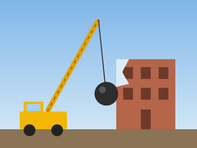
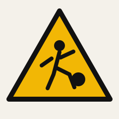

Wrecking ball
From Encyclopedia Destructa, the free encyclopedia you are about to wreck
This article is about the demolition tool. For the thing you are holding, see Rocket launcher.

| Type | Demolition tool |
|---|---|
| Weight | Up to about 5,400 kg (12,000 lb) |
| Material | Forged steel |
| Carried by | Crawler crane, dragline |
| Replaced by | Hydraulic breakers, high-reach excavators |
A wrecking ball is a heavy steel ball hung from a crane and swung or dropped into a structure to knock it down. It is one of the oldest and simplest tools of mechanised demolition: the crane lifts the ball, gravity and momentum do the rest, and the building comes apart one bite at a time.
The ball is usually pear-shaped rather than perfectly round, with the narrow end at the top where the chain attaches. That shape lets it slip back out of a wall it has just broken through instead of catching on the edges of the hole. Operators use two basic motions: a drop, where the ball is released straight down onto a floor or roof, and a swing, where it is pendulumed sideways into a wall.[1]
Wrecking balls are most effective against masonry and concrete, which are strong under compression but break easily when struck. Steel-framed buildings are much harder to bring down this way, because the frame bends rather than shatters.
History
Dense city blocks made controlled, piece-by-piece demolition necessary.
Heavy weights dropped from a height have been used to break things for as long as there have been cranes. The recognisable wrecking ball on a steel cable spread with the steam and then diesel crawler crane in the early twentieth century, when cities began replacing whole blocks of older brick buildings.[citation needed]
For most of the century it was the default way to take down a mid-sized building. A single crane and operator could reduce a four- or five-storey structure to rubble in days, and the work needed almost no preparation beyond clearing the site.
From the 1990s onward the ball was steadily pushed aside by hydraulic excavators fitted with long booms, shears and breakers. These can take a building apart floor by floor from the top, sort the materials as they go, and do it with far less dust, noise and flying debris. The wrecking ball survives mostly on small jobs and, overwhelmingly, in pictures.
Technique

Exclusion zones around the swing radius are mandatory on most sites.
The hardest part of operating a wrecking ball is controlling the swing. The ball is not attached to anything rigid, so the operator must time the crane's rotation and the cable's pull to build momentum and then stop the ball from swinging back towards the crane. A missed strike can carry the ball straight through the far side of a wall and out of sight.
Most operators work from the top of a building down, knocking in the roof and upper walls so that debris falls inward. Taking out the ground floor first is the classic mistake: the building can collapse all at once and in a direction nobody chose.
- Drop — the ball is lifted above a slab and released onto it.
- Swing — the ball is swung sideways into a wall, usually along the line of the boom.
- Slew — the whole crane rotates, dragging the ball across a wall face.
Comparison with other methods
| Method | Speed | Precision | Dust & noise |
|---|---|---|---|
| Wrecking ball | Fast | Low | High |
| High-reach excavator | Medium | High | Medium |
| Implosion | Instant | Very high | Very high, briefly |
| Hand demolition | Slow | Very high | Low |
| You, right now | Depends | Depends | Considerable |
In popular culture
The wrecking ball is a common shorthand for sudden, total change — the moment the old thing is knocked down to make way for the new. It turns up in cartoons, music videos and advertising far more often than on real demolition sites, where it has become something of a rarity.
It is also, as you may have noticed, a fairly good metaphor for what happens to a web page when someone is given a jetpack and five weapons and told nothing on it is load-bearing.
References
- A handbook of demolition practice that does not exist, p. 12.
- Everything else on this page, which was written to be blown up.